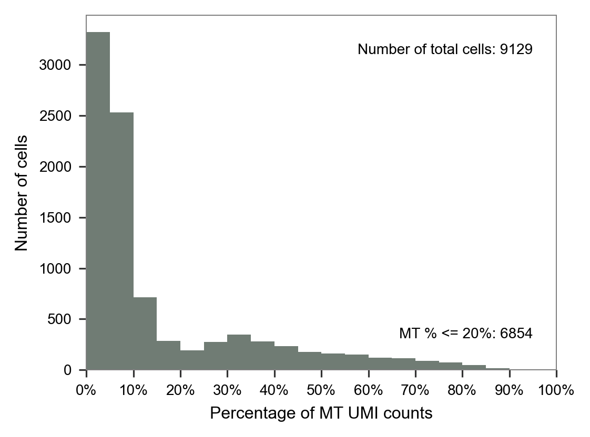
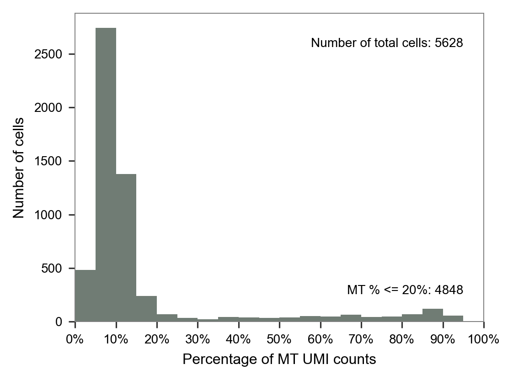
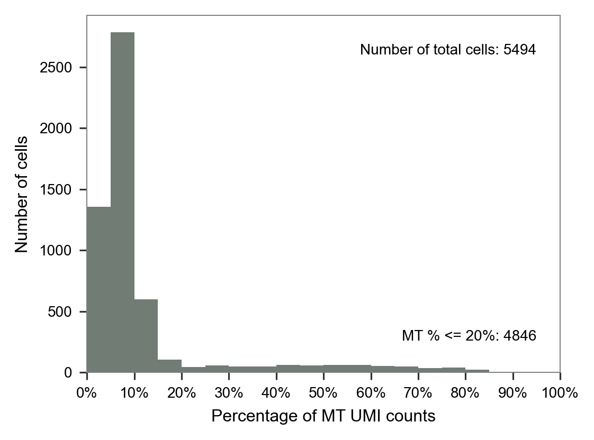
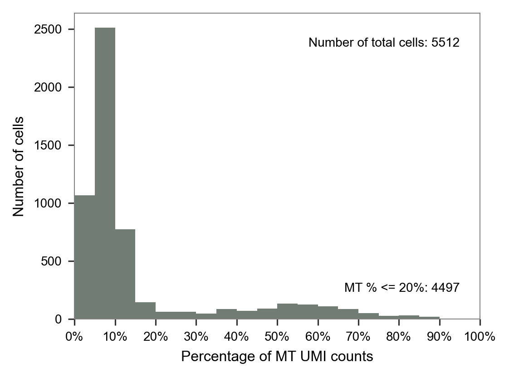
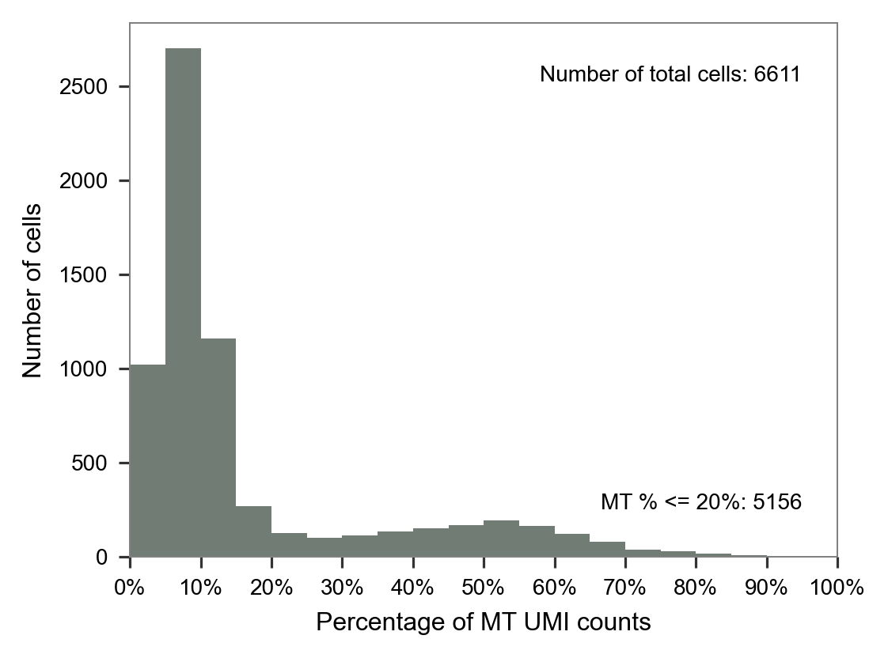
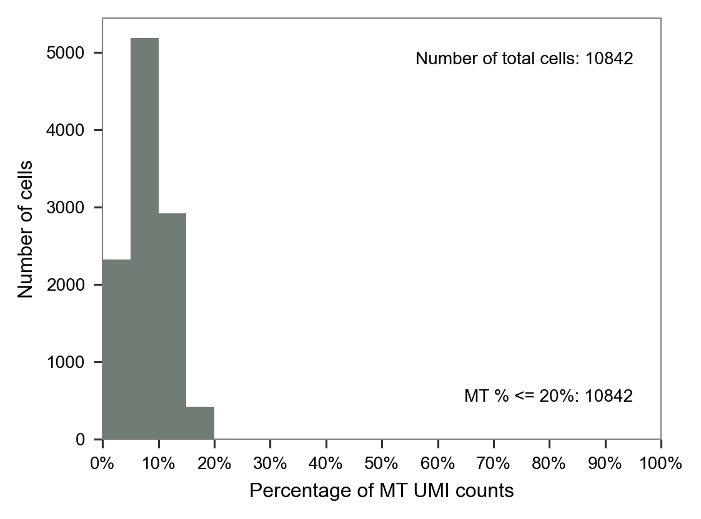

from datetime import datetime
datetime.today().strftime("%Y-%m-%d %H:%M:%S")'2022-09-24 22:07:30'Jialei Duan ![]()
Human blastoids provide a readily accessible, scalable, versatile and perturbable alternative to blastocysts for studying early human development, understanding early pregnancy loss and gaining insights into early developmental defects.
from datetime import datetime
datetime.today().strftime("%Y-%m-%d %H:%M:%S")'2022-09-24 22:07:30'import sys
sys.path.append("/Users/jialei/Dropbox/Data/Projects/UTSW/Scripts/utilities")
from pathlib import Path
import anndata as ad
import matplotlib.pyplot as plt
import numpy as np
import pandas as pd
import scipy.sparse
import seaborn as sns
from matplotlib import __version__ as mpl_versionprint(sys.version)
print("numpy", np.__version__)
print("pandas", pd.__version__)
print("scipy", scipy.__version__)
print("matplotlib", mpl_version)
print("seaborn", sns.__version__)3.9.13 | packaged by conda-forge | (main, May 27 2022, 17:00:33)
[Clang 13.0.1 ]
numpy 1.22.4
pandas 1.4.4
scipy 1.9.1
matplotlib 3.5.3
seaborn 0.12.0params = {
"pdf.fonttype": 42,
"font.family": "sans-serif",
"font.sans-serif": "Arial",
"mathtext.default": "regular",
"figure.dpi": 96 * 1.5,
}
plt.rcParams.update(params)from utilities import (
calc_mt_percentage,
plot_barplot_mt_distribution,
read_10x_matrix,
)PROJECT_DIR = "/Users/jialei/Dropbox/Data/Projects/UTSW/Human_blastoid"
PROJECT_DIR = Path(PROJECT_DIR)batches = ["LW36", "LW58", "LW59", "LW60", "LW61"]
scrublet_files = [
"cells_singlet_log_0.235_9129_637.txt",
"cells_singlet_log_0.162_5628_874.txt",
"cells_singlet_log_0.174_5494_626.txt",
"cells_singlet_log_0.196_5512_189.txt",
"cells_singlet_log_0.195_6611_707.txt"
]
mt_ratio = dict()
for i, j in zip(batches, scrublet_files):
print(i, j)
m = read_10x_matrix(
data_directory=PROJECT_DIR / "raw" / i / "filtered_feature_bc_matrix",
cell_id_prefix=i,
features_selected="Gene Expression",
)
cells_included = [
i + "_" + ii.rstrip().replace("-1", "")
for ii in open(file=PROJECT_DIR / "raw" / i / "scrublet" / j, mode="r")
]
adata = ad.AnnData(
X=m["matrix"].T,
obs=pd.DataFrame(m["barcodes"], index=m["barcodes"], columns=["cell"]),
var=pd.DataFrame(
m["features"], index=m["features"], columns=["features"]
),
dtype=np.int64,
)
adata = adata[cells_included, :]
mt_ratio[i] = calc_mt_percentage(adata.X.T, adata.var.index)
del m
del adataLW36 cells_singlet_log_0.235_9129_637.txtLW58 cells_singlet_log_0.162_5628_874.txtLW59 cells_singlet_log_0.174_5494_626.txtLW60 cells_singlet_log_0.196_5512_189.txtLW61 cells_singlet_log_0.195_6611_707.txtfor i in mt_ratio:
print(i)
fig, ax = plt.subplots(nrows=1, ncols=1, figsize=(4 * 1, 3 * 1))
plot_barplot_mt_distribution(x=mt_ratio[i], ax=ax)
plt.tight_layout()
plt.show()
plt.close(fig=fig)LW36
LW58
LW59
LW60
LW61
batches = ["LW49", "LW50", "LW51", "LW52"]adatas = list()
for i in batches:
print(i)
m = read_10x_matrix(
data_directory=PROJECT_DIR / "raw" / i / "filtered_feature_bc_matrix",
cell_id_prefix=i,
features_selected="Gene Expression",
)
adata = ad.AnnData(
X=m["matrix"].T,
obs=pd.DataFrame(m["barcodes"], index=m["barcodes"], columns=["cell"]),
var=pd.DataFrame(
m["features"], index=m["features"], columns=["features"]
),
dtype=np.int64,
)
adatas.append(adata)
del m
del adataLW49LW50LW51LW52cells_included = [
i.rstrip() for i in
open(PROJECT_DIR
/ "raw"
/ "feeder_cell_detection"
/ "filtered_feature_bc_matrix_scrublet"
/ "clustering"
/ "LW49_LW50_LW51_LW52/cells_included.txt")
]adata = ad.concat(adatas)
adata = adata[cells_included, :]
adataView of AnnData object with n_obs × n_vars = 10842 × 33538
obs: 'cell'mt_ratio = calc_mt_percentage(adata.X.T, adata.var.index)
fig, ax = plt.subplots(nrows=1, ncols=1, figsize=(4 * 1, 3 * 1))
plot_barplot_mt_distribution(x=mt_ratio, ax=ax)
plt.tight_layout()
plt.show()
plt.close(fig=fig)

@article{yu,
author = {Leqian Yu and Yulei Wei and Jialei Duan and Daniel A.
Schmitz and Masahiro Sakurai and Lei Wang and Kunhua Wang and Shuhua
Zhao and Gary C. Hon and Jun Wu},
editor = {},
publisher = {Nature Publishing Group},
title = {Blastocyst-Like Structures Generated from Human Pluripotent
Stem Cells},
journal = {Nature},
volume = {591},
number = {7851},
pages = {620 - 626},
date = {},
url = {https://doi.org/10.1038/s41586-021-03356-y},
doi = {10.1038/s41586-021-03356-y},
langid = {en},
abstract = {Human blastoids provide a readily accessible, scalable,
versatile and perturbable alternative to blastocysts for studying
early human development, understanding early pregnancy loss and
gaining insights into early developmental defects.}
}